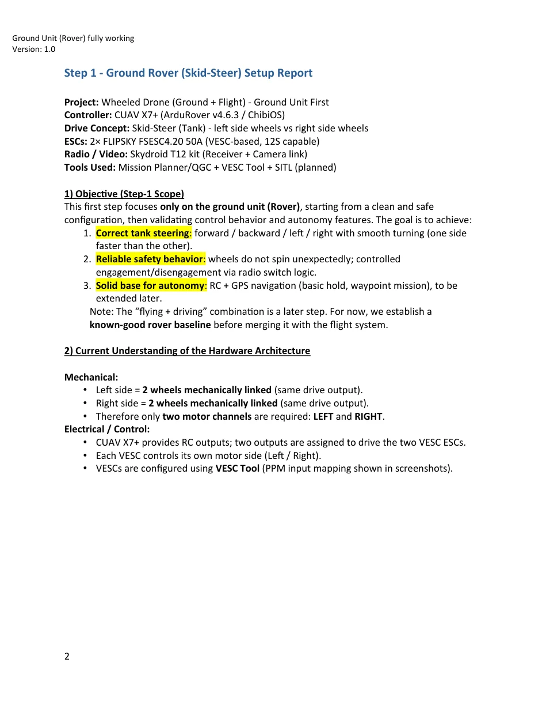
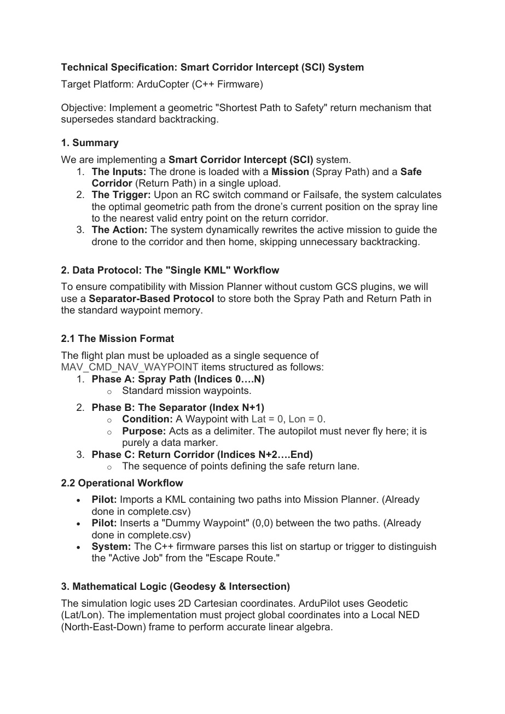
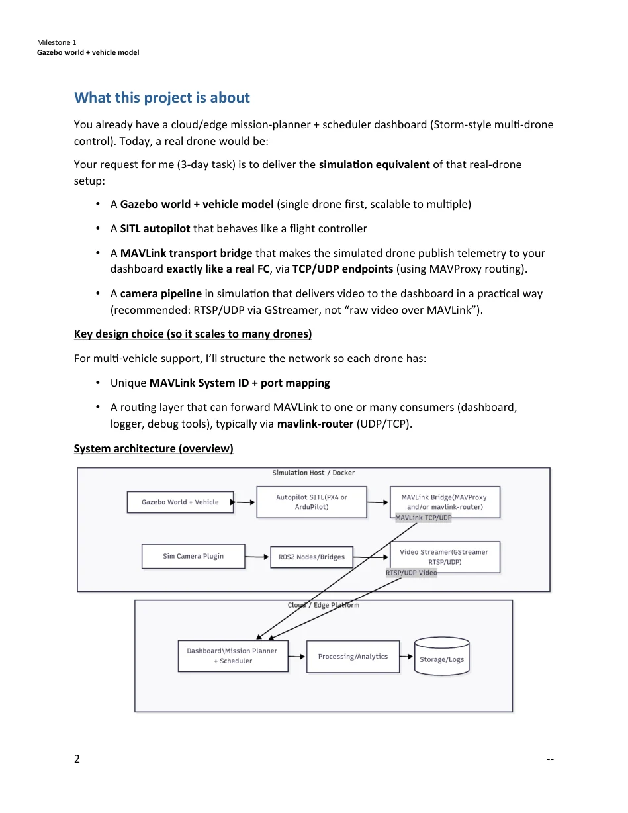

Flight diagnostics
VTOL flight-log analysis
Attitude tracking, vibration and filtering
VTOL & fixed-wing aircraft
Engineering work · Original documentation
Client reports, integration guides, design studies and technical specifications. Browse the public versions by platform or document type, then open the report alongside its project context.
Flight diagnostics
Attitude tracking, vibration and filtering
VTOL & fixed-wing aircraft

Flight diagnostics
VIBE channels, clipping and diagnostic interpretation
Multirotor & helicopter systems

Flight diagnostics
Yaw tracking, estimator setup and filter diagnosis
Multirotor & helicopter systems

Flight diagnostics
FFT interpretation before roll/pitch PID tuning
Multirotor & helicopter systems

Autonomy & perception
Architecture, pose estimation, MAVLink and staged tests
Avionics & machine vision

Integration & commissioning
Skid-steer control, VESC interfaces and safety gating
Ground robotics & UAV docking

Integration & commissioning
Power, navigation and actuator routing
Unmanned surface vehicles

Flight diagnostics
Pusher-airframe configuration and Blackbox test planning
VTOL & fixed-wing aircraft

Autonomy & perception
Unitree L2, ROS 2, MAVROS and ArduPilot
Avionics & machine vision

Autonomy & perception
Mission representation, geometric routing and SITL checks
Avionics & machine vision

Simulation & systems
SITL, MAVLink routing, video and multi-vehicle scaling
Avionics & machine vision

Design & feasibility
Airframe concept, six-motor versus coaxial trade-off and test gates
Multirotor & helicopter systems

Flight diagnostics
Attitude tracking, vibration, filters and next-test priorities
Multirotor & helicopter systems
No documents match these filters.
These files contain original report pages selected for public review. Client identifiers, raw log attachments and private commercial material are excluded. Each document states whether the work reached diagnostic review, integration, design or feasibility study.